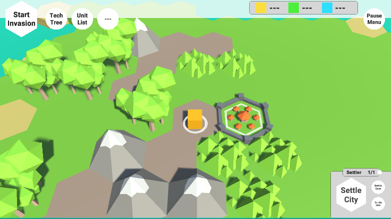
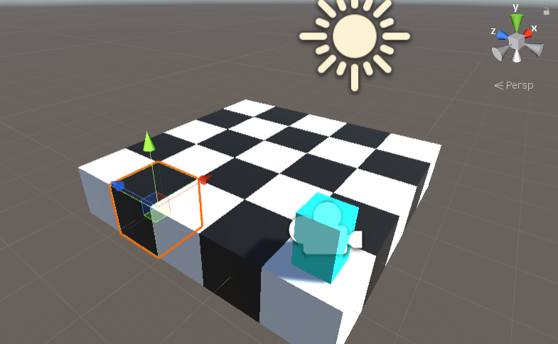
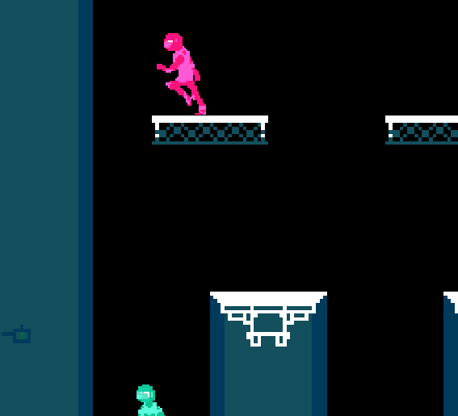
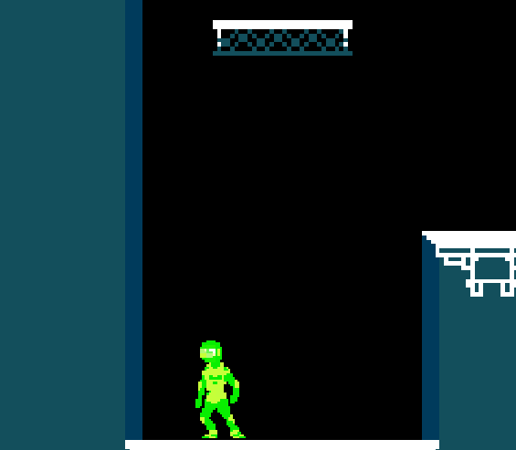
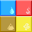

■ Summer 2019: Multiple Small Projects:
■ HexMap Project:

I used this online tutorial made by Catlike Coding to create a hex-based map creation tool. I was planning on creating a full game with this and will most likely do so in the future.
■ Perlin Noise Terrain Generation:

Working off an online tutorial, I programmed a terrain generator that uses perlin noise to create a 3D terrain mesh using various input values.
■ HexSurvival Game:
After finishing the HexMap Turorials I attempted to create my own variation of a hex-based game. I wanted to combine the 4X strategy genre with a tower defence mechanic to create a civ-inspired strategy game. While not finished, I plan on coming back to this project at some point.
■ RougeChess Game:
Near the end of the summer I had this idea to create a rouge-like game based around the mechanics of chess. Despite only having a very rough draft of the game. I plan on completely finishing this game in the future.
■ Spring: TAGD Spring 2019 Game Jam:
 Ascension: Escape The Well was created for TAGD's second semester-wide game jam. The theme for this semester was "Stuck Together", so I designed a game where you and your friends are 'stuck together' in a well and must escape to win. I was inspired by many of the games that I was playing at the time. These include: TowerFall for its fast-paced multiplayer gameplay and its simplistic combat system. SSB Melee for its technical movement and its fast-paced gameplay aswell. And Nidhogg for its minimalistic yet dynamic artstyle.
■ December 2018: Card Game Project [Elemental]:
This is the first demo of a personal project in which I create a digital card game heavily inspired by Mega Crit's game: Slay the Spire. I will continue to work and update the game throughout the Spring semester.
■ November 2018: TAGD Fall 2018 Game Jam:

Deep Pockets was a game made for the first ever TAGD (Texas Aggie Game Developers) semester wide game jam, the theme being "Winning to Lose". I ended up winning the award for best programming, the other awards being best art, best design, and crowd favorite.
The game is a 2D Rogue-like where the goal is to collect as much treasure as possible on every floor. The levels are procedurally generated and contain enemies that the player must fight off in order to have them drop items. At the end of a floor, the player drops down into a shop where they can sell all their items collected in order to upgrade their stats. The game features mechanics like: a weighted inventory system that allows the player to hold up to a certain amount of weight of items, combat system that lets the player attack in 8 different directions, and a difficulty system that makes enemies deal more damage, have more health, and spawn more often as the player progresses throughout sequential floors.
This was my first project using the Unity game engine. Throughout the development of the game, I came to appreciate the engine the more I learned about how to use it. I also came to realize the value of planning out a project beforehand as compared to just on the fly.
■ October 2018: Chillennium Game Jam:

Chillennium is the largest student-run game jam in the world. Participants (in teams of 1-4) have 48 hours to plan, design, and develop a video game from scratch based around a theme. For more information, visit the official Chillennium Website.
I attended Chillennium 2018 in a team with three other friends where we developed a game based on the "Transformation" theme. The game we made, "Mineral, Parchment, Shears!" is a 2D side-scrolling runner where the player must 'transform' between rock, paper, and scissors to defeat oncoming enemies.
We programmed the game using Javascript and WebGL, the reason being that he game would be playable in browser and be more accessible. I mainly worked on the artistic design and coding portions of the game. Below is a button to play the game in a new tab.
■ Summer 2018: C++ with SDL 2.0:

After my first two semesters in college, I wanted to continue to work on programming projects. I decided to expand upon what I was taught in my introductory programming class (in C++); using an external library (called SDL 2.0), I was able to import and render textures and sprites to a window screen. With this, I was able to program three simple games thoughout the summer: Hangman, Floodit!, and Tetris.
I programmed the games in C++ because that was the only language I was familar with at the time. The disadvantage of this is that one has to download and run the application on their own device as compared to playing the game in browser.